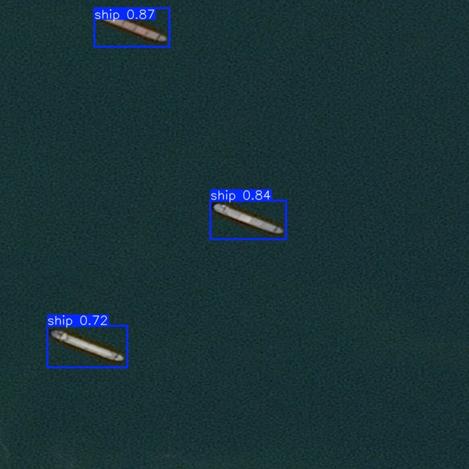
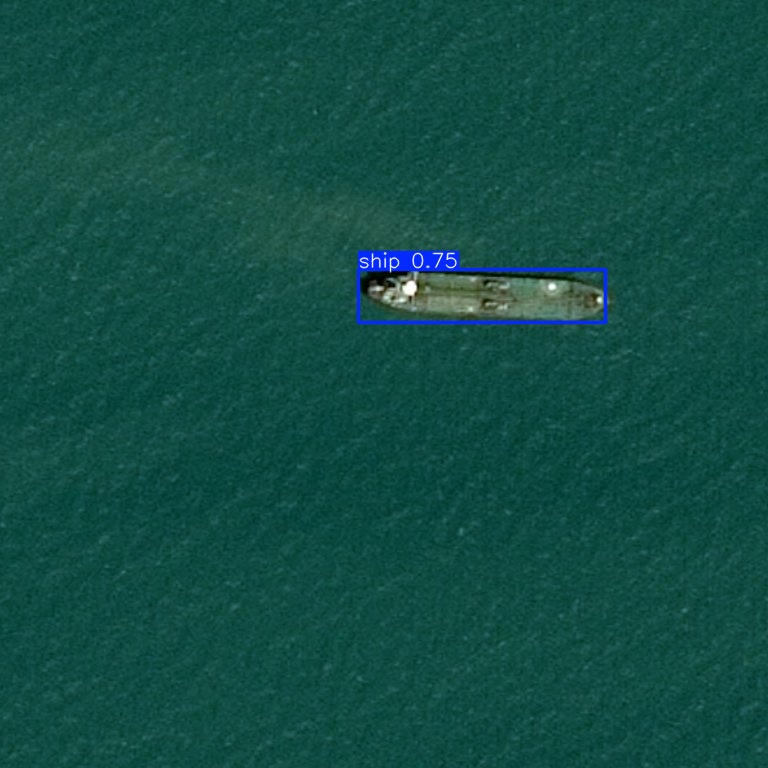

Overview
Maritime monitoring has significant real-world applications, from tracking illegal fishing and smuggling to port logistics and naval operations. Historically this kind of surveillance required significant human effort to review satellite imagery manually. Modern object detection models offer a way to automate this process at scale. This project involved training a YOLOv8 model to detect ships in satellite imagery, using the Airbus Ship Detection dataset which is a competition dataset containing tens of thousands of labelled overhead images of the world's oceans, ports, and coastlines.
Build Process
The Airbus dataset presented an immediate preprocessing challenge. Annotations were stored as run-length encoded (RLE) pixel masks, a compact format that needed to be converted into bounding boxes before YOLO could use them. Using some of the code from the competition's public kernels as a starting point, I added a conversion script that decoded each mask, computed the bounding box extents, and normalised the coordinates relative to the image dimensions. This produced the plain text label files that Ultralytics YOLO expects.
Rather than training on the full 32GB dataset, I sampled 10,000 images - 5,000 containing ships and 5,000 empty ocean scenes, to keep training time manageable while maintaining a balanced dataset. The images were split 80/20 into training and validation sets.
I used YOLOv8n, the nano variant of Ultralytics' YOLOv8 architecture, initialised with pretrained COCO weights rather than training from scratch. Transfer learning meant the model already had a strong understanding of edges, shapes, and spatial features before seeing a single satellite image, which significantly accelerated convergence.
Training ran for 20 epochs on my old desktop GPU. After each epoch, Ultralytics logged precision, recall, and mAP scores against the held-out validation set, making it straightforward to monitor for overfitting and assess when the model had converged.
Results
The final model achieved a precision of 0.756, a recall of 0.582, and a mAP@50 of 0.655 on the validation set. In practical terms, when the model identified something as a ship it was correct roughly three quarters of the time, and it successfully located just over half of all ships present in the validation images. The gap between precision and recall suggests the model errs on the side of caution — only flagging detections it is fairly confident about, at the cost of missing some smaller or partially obscured vessels. This is a reasonable tradeoff for a lightweight model trained on a subset of the available data.


What I Learned
This project was an introduction to the full object detection pipeline, from raw data and annotation conversion through to training, evaluation, and inference. Working with a real competition dataset meant dealing with practical challenges like annotation format conversion, class imbalance between ship and empty-ocean images, and managing dataset scale on consumer hardware. Having a full data set made this dramatically easier than my attempts to do further my Judo project for throw detection which after 20 hours of competition footage watched on 2x speed I had only obtained 26 of the throws I wanted to detect.